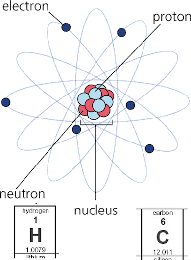
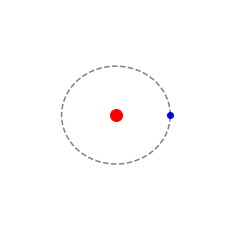

2. The Smallest Things#
Fig 2.1 Building things up from the bottom is a key point in nanotechnology. Lego can be used to build anything you want.
Bottom-up assembly is a key concept. Lego is the best toy for this reason, you can build anything you want from basic building blocks. Lets now consider the smallest building blocks.
2.1 The basic building blocks - atoms#
If we take a piece of iron and split it, it’s still iron - just a bit smaller. Imagine if it was possible to keep splitting until it is not posible to split it anymore. This is idea that the Greeks philosophers where thinking about. Is it possible to split an infinte number of times or is there a limit (assuming tools is not the limitation). We will come back to this idea in the next lecture. For now, we know that atoms are the limit.

Fig 2.2 Artists impression of Democritus.
2.1.1 The Classical View of Atoms#

Fig 2.3 A classical atom represetation with a nucleus of protons and neutrons, which are surrounded by electrons.
Nucleus: Composed of protons (+ve charge) and neutrons (neutral).
Surrounded by electrons (-ve charge), creating a balance where the number of protons equals the number of electrons.
Atomic number (Z): Number of protons which is equal to the number of electrons.
Atomic weight (A): Sum of protons and neutrons (A = N + Z).
Proton Mass: ~1.673 x 10-27 kg (or 1 atomic mass unit, amu/u).
Electron Mass: ~9.110 x 10-31 kg (electrons are ~2000x lighter than protons).
Nuclear Radius: Typically 0.8-10 femtometers (fm) (1 fm = 10-15 meters).
Scale comparison: A 1 cm nucleus corresponds to a 1 km atom in size.

Fig 2.4 The electron can be thought of as like a planet orbiting a star.
Note
A Key point. The mathematics of a classsically electron orbiting a proton are indentical to a planet orbiting the Sun in our solar system. This latter solution maths was famously developed Newton who is the father of Mechanics and therefore it is unsuprising that, a couple of hundred years later, when it is applied to the atom it becomes known as’Quantum’ Mechanics (QM). In later lectures we will cover why this first model ultimately fails, but we will cover this as it is useful to understand the concepts and how they have developed. We will address Quantum mechanics in later lectures without worrying too much about the actual mathematics. We will draw sketches of solutions rather than working about mathematical functions to try to make this topic inclusive. Physics students will cover these models in detail as part of their core studies, but because of the importance of atoms to nanotechnology, we cannot wait for those QM models to fully explained for this course.
2.1.2 So How Small is “Small”?#
The nanometer scale involves sizes of 1-100 nm (1 nm = 10-9 meters).
Atoms range in size from approximately 0.1-0.4 nm. A single device or machine that is just a few atoms thick would be around 1 nm in size.
Understanding scale:
1 nm is to 1 meter as a glass marble is to the Earth.
Nanotechnology requires assembling 10s to 1000s of atoms to create functional structures. This is why nanomachines are often at least 1 nm thick.
2.2 Checking understanding#
2.2.1 Question:#
If we took a gold ring and halved it, and the took the half and halved that, such that the gold piece is halved n times. Approximately what is the maxiumum value for n?
**Click for an example solution**
** Potential Solution:**
A ring is about \(m_{ring}= 0.010\) kg
mass of a single atom= \(m_{atom}= 196.96657 \times 1.66054 e^{-27}\) kg
\(newmass=\frac{m_{ring}}{2^n}\)
therefore set the new mass a the minimum mass it could be.
\(m_{atom}=\frac{m_{ring}}{2^n}\)
\(n = \log_2{\frac{m_{ring}}{m_{atom}}}\)
2.2.2 Question:#
If a nanometre were the thickness of your fingernail, then what sort of distance would a metre be?
**Click for an example solution**
** Potential Solution:**
Less say a fingernail is 0.5mm
A metre is \(10^9\) times larger than a nanometre.
S0:
\(0.5 \times 10^{-3}\text{m} \times 10^9 =5 \times 10^5 \text{m} = 500 \text{km}\)
500km is approximately the distance from London to Edinburgh
Show code cell source
import ipywidgets as widgets
from IPython.display import display, Markdown, clear_output, HTML
display(HTML("""
<style>
.widget-radio-box label {
white-space: normal !important; /* Allow wrapping */
display: block !important; /* Force block layout */
margin: 6px 0px; /* Add vertical spacing */
}
.widget-label {
font-weight: bold;
}
</style>
"""))
Show code cell source
q1 = widgets.HTML("<b>Why is Lego used as a metaphor in nanotechnology?</b>")
q1_options = widgets.RadioButtons(
options=[
"Because it is colourful and fun",
"Because it can be used to build tall towers",
"You can build any structures from simple blocks"
],
layout=widgets.Layout(width='auto'), # Prevent forced shrinking
style={'description_width': 'initial'},
description='Answer:',
disabled=False
)
q1_output = widgets.Output()
def q1_check(change):
q1_output.clear_output()
with q1_output:
if change['new'] == "Because you can build complex structures from simple blocks":
display(Markdown("✅ **Correct!** This reflects the concept of bottom-up assembly in nanotech."))
else:
display(Markdown("❌ **Try again.** Think about the idea of building from small building blocks."))
q1_options.observe(q1_check, names='value')
display(q1, q1_options, q1_output)
Show code cell source
q2 = widgets.HTML("<b>Which statement best describes the classical model of the atom?</b>")
q2_options = widgets.RadioButtons(
options=[
"Electrons are embedded inside the nucleus",
"Electrons orbit a nucleus made of protons and neutrons",
"Atoms have no internal structure"
],
layout=widgets.Layout(width='auto'), # Prevent forced shrinking
style={'description_width': 'initial'},
description='Answer:',
disabled=False
)
q2_output = widgets.Output()
def q2_check(change):
q2_output.clear_output()
with q2_output:
if change['new'] == "Electrons orbit a nucleus made of protons and neutrons":
display(Markdown("✅ **Correct!** This is the classical orbit model of atoms."))
else:
display(Markdown("❌ **Incorrect.** Review Fig 2.3 and the classical description."))
q2_options.observe(q2_check, names='value')
display(q2, q2_options, q2_output)
Show code cell source
q3 = widgets.HTML("<b>Approximately how large is a single atom?</b>")
q3_options = widgets.RadioButtons(
options=[
"1 nm",
"0.1 micrometer (0.1 µm)",
"0.1 to 0.4 nanometers (nm)"
],
layout=widgets.Layout(width='auto'), # Prevent forced shrinking
style={'description_width': 'initial'},
description='Answer:',
disabled=False
)
q3_output = widgets.Output()
def q3_check(change):
q3_output.clear_output()
with q3_output:
if change['new'] == "0.1 to 0.4 nanometers (nm)":
display(Markdown("✅ **Correct!** Atom sizes are on the sub-nanometer scale."))
else:
display(Markdown("❌ **Incorrect.** Consider how small 'nano' really is."))
q3_options.observe(q3_check, names='value')
display(q3, q3_options, q3_output)
Show code cell source
q4 = widgets.HTML("<b>What does the Z number tell us?</b>")
q4_options = widgets.RadioButtons(
options=[
"The atomic weight",
"The number of electrons",
"The number of protons and neutrons"
],
layout=widgets.Layout(width='auto'), # Prevent forced shrinking
style={'description_width': 'initial'},
description='Answer:',
disabled=False
)
q4_output = widgets.Output()
def q4_check(change):
q4_output.clear_output()
with q4_output:
if change['new'] == "The number of electrons":
display(Markdown("✅ **Correct!** It tells us the number of protons or electrons."))
else:
display(Markdown("❌ **Incorrect.** Check the notes"))
q3_options.observe(q4_check, names='value')
display(q4, q4_options, q4_output)